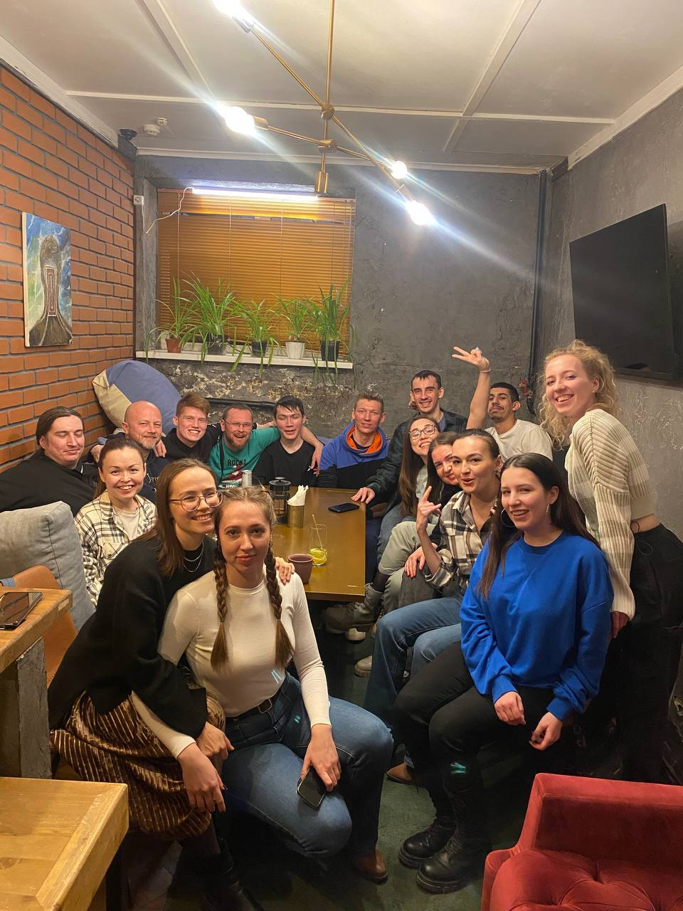
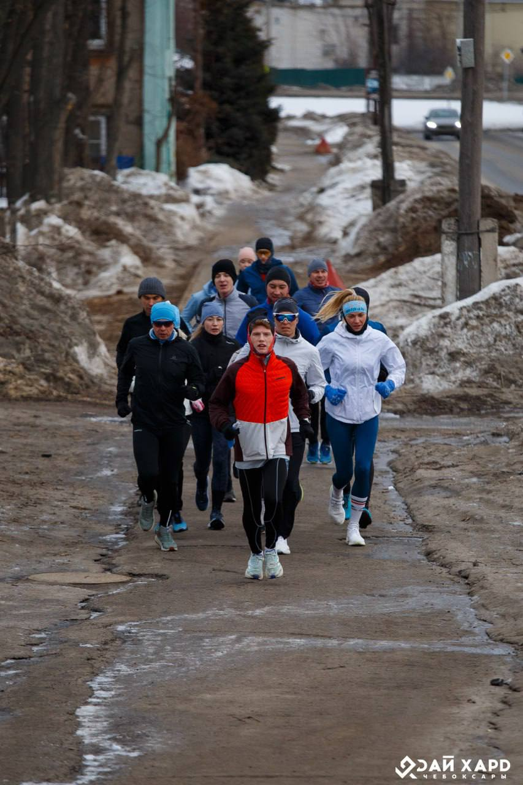

English Speaking Club
English Speaking Club in Cheboksary, Dec 27, 2023

There is several English speaking club in Cheboksary
One of them holds his events in the Totem Bar. And the second one located at national library. There used to be another club at Maxim Gorky 27
DieHard
Sunday Long Run and the first run with a chest heart rate monitor, March 22, 2024

Die Hard is a running community that runs long Sunday runs at a fast pace.
The goal of the project is to help fast runners with additional motivation and find a running company. The community creates a space where runners of any level can grow, develop and reach new heights together.